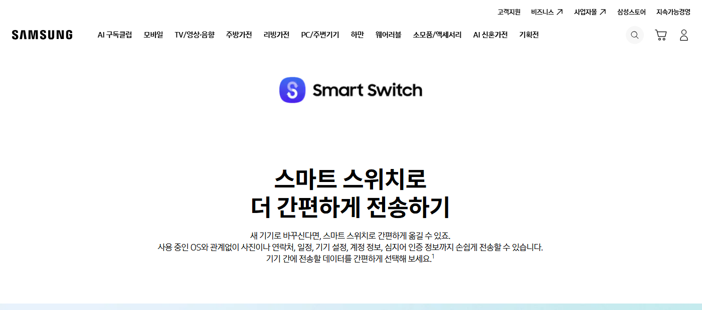
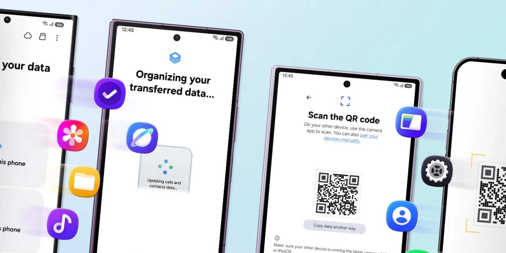
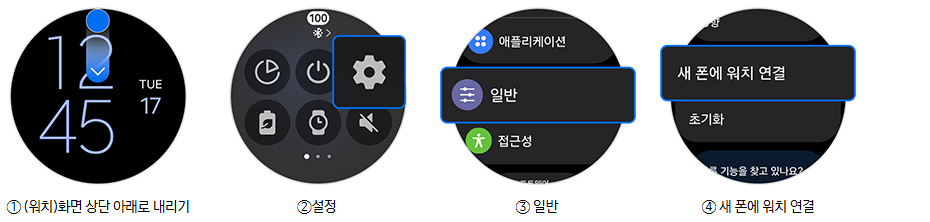

갤럭시 스마트 스위치로 데이터 옮기는 법 — 기기변경 시 사진·연락처 이전 방법
새 휴대전화를 개통하고 나면 제일 먼저 막히는 게 데이터 옮기기예요. 새 휴대전화에서 앱을 실행해 몇 단계만 거치면 사진·연락처 같은 자료가 통째로 옮겨져요.
삼성전자가 이달 22일(현지시간) 갤럭시 언팩 2026에서 갤럭시 Z 폴드8과 갤럭시 워치9를 공개했어요. 두 제품 다 국내 사전판매가 7월 28일부터 시작돼요.
기기변경을 앞둔 분들을 위해 스마트 스위치 사용법만 정리해 볼게요. 스마트 스위치는 삼성전자의 공식 데이터 이전 앱이에요. 기기를 바꿀 때 사진이나 연락처 같은 자료를 새 휴대전화로 옮겨주는 도구예요.

삼성전자가 운영하는 스마트 스위치 공식 소개 페이지 화면이에요
이미지 출처: 삼성닷컴 — 스마트 스위치 · 네이버 본문엔 받아서 재업로드 권장
스마트 스위치로 데이터 옮기는 방법
새 갤럭시에서 스마트 스위치 앱을 켜고 '이 휴대전화로 받기'를 누르면 시작돼요. 절차는 이렇게 진행돼요.
- 새로 산 갤럭시에서 스마트 스위치 앱을 실행합니다.
- '이 휴대전화로 받기'를 선택하고, 쓰던 기기 종류를 고릅니다.
- 연결 방법으로 무선 또는 케이블 중 하나를 선택합니다.
- 이전 기기에서도 스마트 스위치 앱을 켜고, 새 기기에 뜨는 QR 코드를 스캔하거나 케이블로 연결합니다.
- 가져올 데이터 항목을 고른 뒤 다음을 누릅니다.
- 전송이 진행되고 데이터 정리까지 끝나면 전송 결과를 눌러 마무리합니다.

새 기기 화면에 뜨는 QR 코드를 이전 기기 카메라로 스캔해 연결해요
이미지 출처: 삼성닷컴 — 스마트 스위치 · 네이버 본문엔 받아서 재업로드 권장
이전 기기 종류에는 갤럭시뿐 아니라 타사 안드로이드, 아이폰·아이패드도 고를 수 있어요. 자세한 지원 범위는 아래에서 다시 짚을게요.
스마트 스위치는 최신 갤럭시라면 대부분 '설정 → 계정 및 백업 → 스마트 스위치'에 이미 설치돼 있어요. 안 보이면 갤럭시 스토어나 구글 플레이 스토어에서 받으면 돼요. 아이폰에서 무선으로 옮길 땐 앱스토어에서 따로 설치해야 해요.
스마트 스위치로 옮길 수 있는 데이터 항목
스마트 스위치는 사진·동영상부터 연락처, 캘린더 일정까지 폭넓게 옮길 수 있어요. 아래 목록은 갤럭시 → 갤럭시 기준이에요.
- 연락처(사진 포함)
- 사진·동영상
- 메시지(문자)
- 캘린더 일정
- 메모
- 기기 설정(키보드·벨소리·접근성·언어 등)
- 통화 기록
- 음악·문서 파일
- 알람·시계, 북마크, 배경화면(기본 설치·갤럭시 테마 제외)
문서는 PPT·XLS·DOC·PDF 같은 형식이 옮겨지고, 음악은 재생목록까지 함께 이동해요.
전송 가능한 항목은 기기 OS와 버전, 연결 방식에 따라 달라질 수 있어요(삼성전자 공식 안내 기준, 2026.07.24 확인). 타사 안드로이드에서 옮길 땐 메모·알람과 시계·기기 설정·배경화면 같은 항목이 일부 빠질 수 있어요.
케이블 연결과 무선 연결, 뭐가 더 나은가요
데이터 용량이 크다면 케이블(유선) 연결이 나아요. 삼성전자는 "전송할 데이터 용량이 크다면 한 번에 더 많은 데이터를 전송할 수 있는 유선 연결을 권장합니다"라고 공식 안내해요(삼성닷컴 스마트 스위치 페이지, 2026.07.24 확인).
사진·동영상이 많이 쌓인 경우엔 케이블 쪽이 속도에서 유리해요. 무선(Wi-Fi) 연결은 데이터가 많으면 시간이 오래 걸릴 수 있어요.
타사 안드로이드·아이폰에서도 되나요
네, 갤럭시가 아니어도 타사 안드로이드나 아이폰·아이패드에서 스마트 스위치로 옮길 수 있어요. 삼성전자 공식 페이지엔 "iOS 기기나 다른 안드로이드 기기에서 전환하는 경우에도 별도의 앱 없이 더 많은 iOS 데이터를 전송할 수 있죠"라고 안내해요(삼성닷컴 스마트 스위치 페이지, 2026.07.24 확인).
PC용 프로그램도 따로 있어서 Windows나 Mac에서도 백업·복원이 가능해요. 기기별 최소 요구사항은 아래 표로 정리했어요.
| 구분 | 최소 요구사항 |
|---|---|
| 갤럭시·타사 안드로이드 | 안드로이드 OS 6.0 이상 |
| 아이폰·아이패드 | iOS 12 이상 |
| 윈도우 PC | 윈도우 10 이상 |
| Mac | macOS 10.13 이상 |
위 수치는 2026.07.24 확인한 삼성전자 공식 페이지 기준이에요. 정책은 이후 바뀔 수 있어요.
아이폰에서 갤럭시로 옮길 때는 무선 전송보다 옮길 수 있는 항목이 많은 업그레이드된 전송 방식도 쓸 수 있어요. 이 방식을 쓰려면 갤럭시는 One UI 9.0 이상과 안드로이드 17 이상을 갖춰야 해요. 아이폰은 iOS 26.6 이상이어야 하고요. 조건에 못 미치면 기존 방식으로 옮기면 돼요.
갤럭시 워치·버즈도 스마트 스위치로 옮기나요
워치 데이터는 스마트 스위치로 옮길 수 있고, 버즈는 새 휴대전화에서 다시 등록하는 방식이에요. 워치는 연결 절차 자체를 워치 본체에서 시작해요.
삼성전자는 스마트 스위치로 갤럭시 북·워치·버즈·링에서도 데이터를 전송할 수 있다고 안내해요. 다만 워치는 아래 조건을 모두 채워야 해요.
- 워치의 Wear OS가 안드로이드 13 이상
- 기존 휴대전화와 새 휴대전화 모두 구글 모바일 서비스(GMS) v23.15.17 이상
- 기존 휴대전화와 새 휴대전화가 같은 삼성 계정·구글 계정으로 로그인
- 워치가 기존 휴대전화에 연결돼 있는 상태
새 휴대전화에 연결할 땐 워치 쪽에서 먼저 시작해요. 워치의 설정 → 일반 → 새 폰에 워치 연결을 선택하세요. 정확한 메뉴 이름은 워치 모델·소프트웨어 버전에 따라 다를 수 있으니 화면 안내를 따라 주시고요. 안내대로 진행하면 새 휴대전화의 갤럭시 웨어러블 앱이 실행되면서 이어져요.

워치 화면을 내려 설정 → 일반 → 새 폰에 워치 연결 순서로 눌러 주세요.
이미지 출처: 삼성전자 서비스 — 새로운 휴대전화에 갤럭시 워치 및 버즈 연결하기 · 네이버 본문엔 받아서 재업로드 권장
연결 과정에서 워치가 초기화돼 데이터가 지워질 수 있어요. 초기화 여부는 워치 모델과 소프트웨어 버전에 따라 달라요. 그래서 시작 전에 백업을 먼저 해 두시는 게 좋아요. 갤럭시 웨어러블 앱에서 '워치 설정 → 계정 및 백업 → 데이터 백업'을 눌러 주세요.
백업해 두면 연결 과정에서 복원할 항목이 다시 표시될 수 있어요.
갤럭시 버즈는 절차가 따로 있어요. 새 휴대전화의 '설정 → 연결 → 블루투스'에서 다시 등록하면 돼요. 이 과정에서 갤럭시 웨어러블 앱이 함께 열릴 수 있어요. 기존 폰과 연결을 해제해도 되고, 기존 폰에서도 계속 쓸 거면 해제하지 않고 건너뛰어도 돼요.
스마트 스위치 전송, 시작 전에 확인하면 좋은 것
가장 먼저 확인할 건 배터리예요. 전송 중에는 충전기를 연결할 수 없어서, 시작 전에 두 기기 모두 배터리를 넉넉히 채워 두는 게 좋아요.
- 두 기기 모두 배터리를 충분히 충전해 둡니다(전송 중엔 충전 불가).
- 무선으로 아이폰·아이패드에서 갤럭시로 옮길 땐, 전송이 끝날 때까지 화면을 끄거나 홈 화면으로 이동하지 않습니다.
- 옮길 데이터가 많다면 무선 대신 케이블 연결로 바꿔서 시도해 봅니다.
- 케이블 연결이 잘 안 잡히면 다른 케이블로 바꿔 봅니다(PC로 옮길 땐 PC의 다른 USB 포트도 시도해 봅니다).
- PC로 옮길 때 인식이 안 되면 삼성 USB 드라이버를 다시 설치해 봅니다.
QR 코드를 스캔하기 어려운 상황도 있어요. 그럴 땐 화면의 '스캔이 안되나요?'를 눌러 새 기기에 뜨는 숫자 코드를 입력하면 돼요.
이번에 나온 폴드8·워치9에서 절차가 따로 달라지는지는, 지금 공개된 삼성 공식 안내 문서에서는 별도로 안내된 내용을 찾지 못했어요. 기기별 화면 안내가 다를 수 있으니 진행하실 땐 화면에 뜨는 문구를 따라가 주세요.
자주 묻는 질문
Q. 스마트 스위치로 옮긴 뒤 이전 기기 데이터는 지워지나요?
아니요. 스마트 스위치는 어느 기기의 콘텐츠도 지우지 않아요. 전송이 끝나도 원본 데이터는 이전 기기에 그대로 남아요.
Q. 아이폰에서 무선으로 옮기는 중에 다른 앱을 써도 되나요?
아이폰에서 무선으로 옮길 때는 전송이 끝날 때까지 화면을 켜 둔 채 머물러야 해요. 다른 앱으로 전환하면 전송이 끊길 수 있어요.
참고한 곳
· 삼성전자 서비스 — 스마트 스위치로 데이터 백업/복원·이동 방법
· 삼성닷컴 — 스마트 스위치
· 삼성전자 뉴스룸 — 갤럭시 Z 폴드8 울트라·폴드8·플립8 등 폴더블 3종 공개
· 삼성전자 뉴스룸 — '갤럭시 워치 울트라2·워치9' 공개
· 삼성전자 서비스 — 새로운 휴대전화에 갤럭시 워치 및 버즈 연결하기
· 삼성전자 서비스 — 갤럭시, 스마트 스위치 앱으로 휴대전화 데이터를 이동하고 싶어요
✔ 같이 보면 좋아요
· 갤럭시 워치9·워치 울트라2 변경점 총정리 — 배터리·다이빙·가격 비교
· 갤럭시 Z 폴드8 전작 비교 — 울트라·플립8 스펙까지 한눈에
새 기기로 갈아타실 분들은 이 두 글도 참고해 보세요.
하루 정리
· 새 갤럭시에서 스마트 스위치 앱을 켜고 '이 휴대전화로 받기'를 선택하면 이전이 시작돼요.
· 사진·연락처·캘린더·메모·기기 설정 같은 자료를 통째로 옮길 수 있어요.
· 데이터가 많다면 무선보다 케이블 연결이 더 빨라요.
· 갤럭시뿐 아니라 타사 안드로이드, 아이폰·아이패드에서도 옮길 수 있어요.
전송 전엔 두 기기 배터리를 넉넉히 채워 두세요. 전송 중에는 충전기를 연결할 수 없거든요.